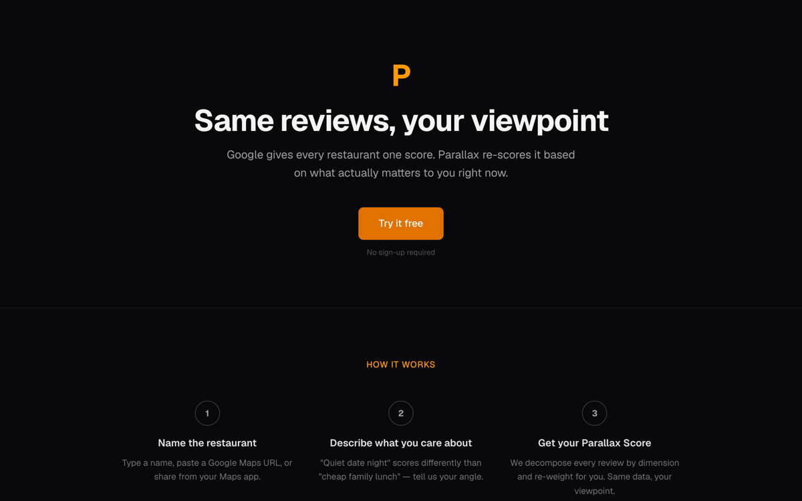
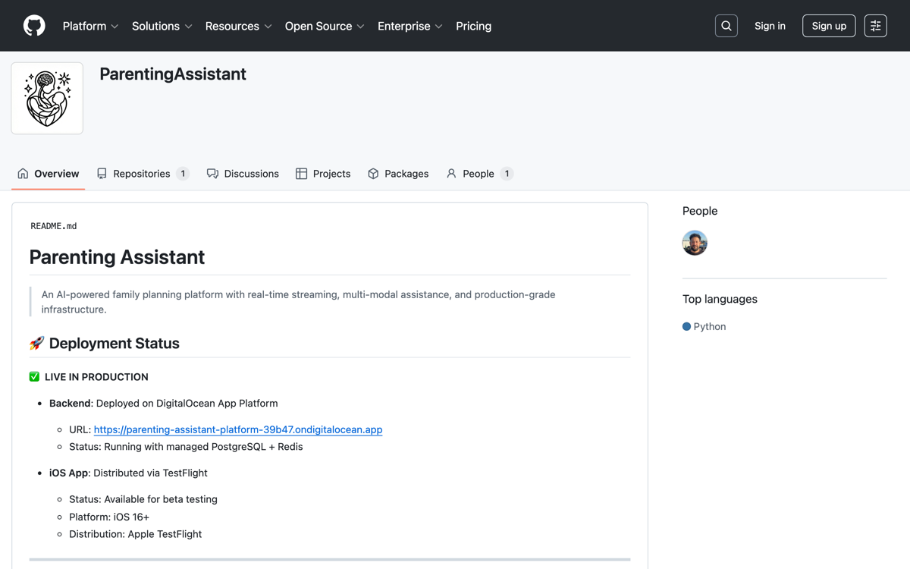
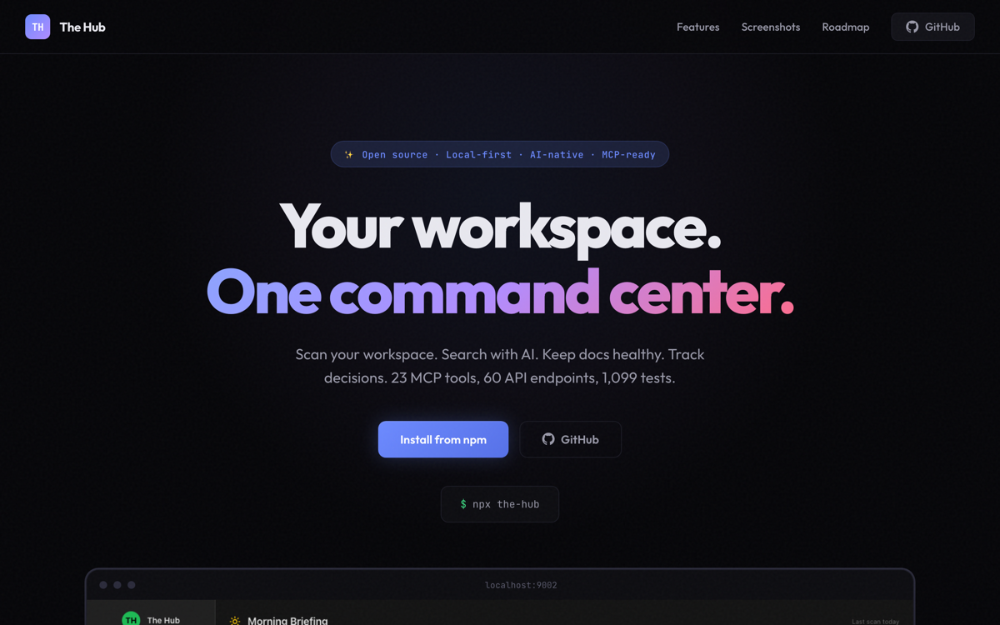
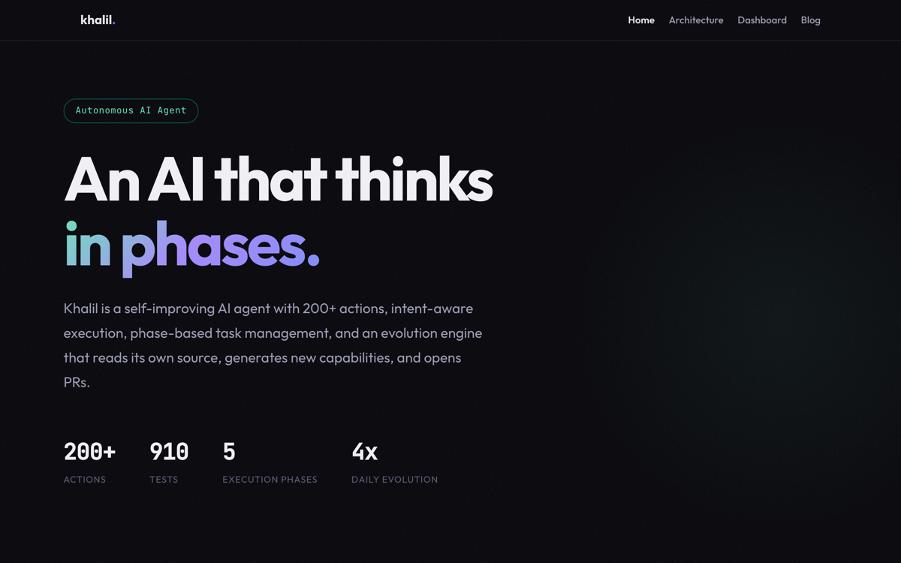
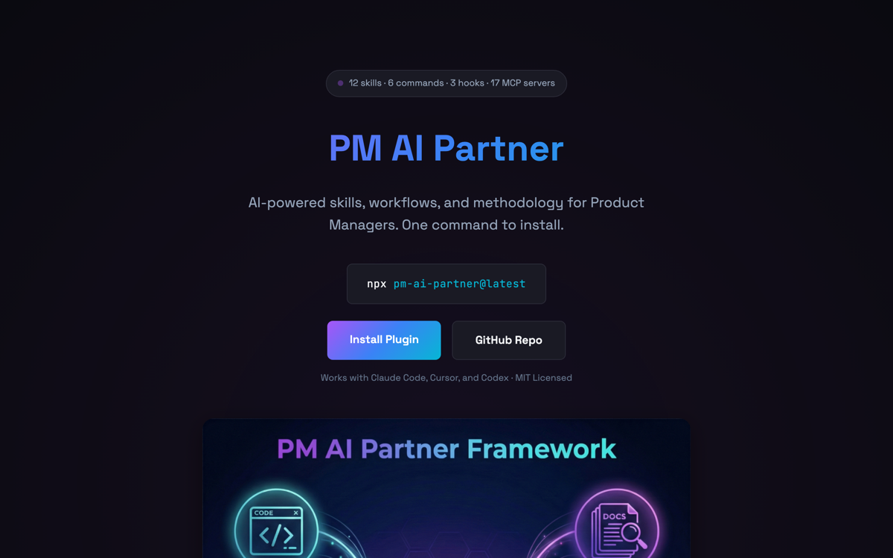
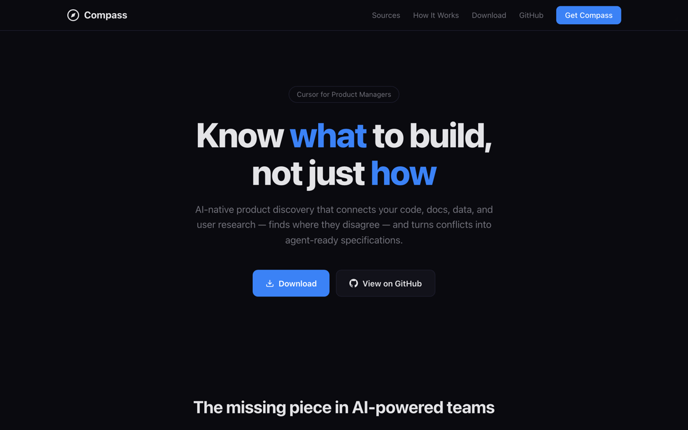
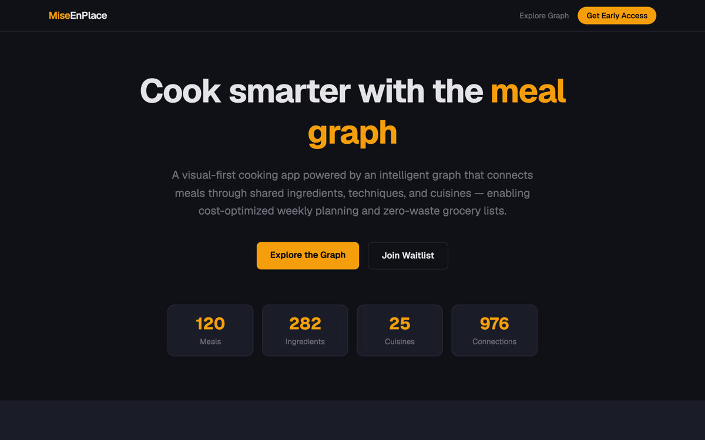

Platform · Product · Engineering · AI
Ahmed Khaled
Mohamed
I've managed 18 engineers, owned product strategy for 700M+ users at Spotify, and I still build. I grew platform adoption from 20% to 80% at Delivery Hero. I build the dashboards, pipelines, and tools my teams use to make decisions.
12 years across engineering, management, and product. 8 shipped products — on the App Store, on npm, across 3 platforms. Platform leader who codes.
The Journey
I didn't start as a manager or a product person. I started as an engineer who couldn't stop asking "why are we building this?"
At 23, I moved from Cairo to Germany for a Master's in Computer Science at the University of Bonn. I co-founded a fintech startup (Splidit), where I was the founding engineer — I built the iOS app, designed the brand, and owned the product end-to-end. No PM, no designer. That's where I learned that ownership isn't a title.
At Delivery Hero, I grew from senior engineer to domain lead, managing 18 engineers across 3 squads. At Spotify, I led platform teams building mobile content architecture and design systems before transitioning to lead messaging infrastructure for 700M+ users.
My background includes 6+ years as an Engineering Manager leading distributed teams (up to 18 engineers). That experience shapes how I operate: I drive architecture-level decisions, build platforms as extensible systems, and balance scalability, velocity, and user experience through clear tradeoffs.
I'm particularly interested in platform, infrastructure, and AI-driven systems where long-term architectural decisions shape product evolution.
Currently
Messaging Platform @ Spotify
700M+ users · Toronto
Background
Egypt → Germany → Canada
MSc Computer Science, Bonn
Languages
English · Arabic · German
How I Lead
Principles I've learned across 12 years and multiple transitions.
Clarity Over Comfort
Hard conversations are a kindness. Ambiguity is cruel. Whether it's feedback to a team member or pushback to leadership, I prioritize clarity — even when it's uncomfortable.
Context Over Control
I don't tell people what to do. I tell them why it matters and let them figure out how. The best solutions come from people closest to the problem.
Build the Builders
My job isn't to be the best engineer or PM. It's to make everyone around me better. I've mentored engineers to senior, EMs to domain leads. That's the legacy that matters.
Influence Over Authority
Authority gets compliance. Influence gets commitment. The best leaders rarely need to pull rank because people want to follow them.
What I Do
Applied AI
LLM systems design · RAG (pgvector, sqlite-vec, FTS5) · Multi-model routing · Prompt engineering · MCP servers · Evaluation pipelines · AI-augmented product workflows
Platform & Product
Messaging systems (push, in-app, inbox) · SDK & API design · Server-driven UI · Platform governance · Experimentation frameworks · Developer experience · 700M+ user scale
Engineering Leadership
Team building (up to 18 engineers, 3 squads) · Mentoring EMs to promotion · Career frameworks · Cross-geography management · Incident response · Hiring & retention
Technical Stack
Swift / SwiftUI · Python / FastAPI · TypeScript / Next.js · Go · BigQuery · PostgreSQL · SQLite · GCP · Electron · React
Experience
Senior PM, Platform — Messaging Infrastructure
Spotify · Toronto 2025 – PresentOwn the technical and product strategy for Spotify's client messaging platform serving 700M+ users. Drive architecture-level decisions across messaging delivery systems, client runtime behavior, and experimentation infrastructure. Lead cross-functional teams (engineering, ML, data) to evolve messaging into reusable platform primitives. Enable product teams through SDKs, APIs, and developer-facing tooling.
EM II / Senior PM — Design Systems
Spotify · Berlin 2023 – 2025Led the platform strategy for Spotify's mobile design system, powering shared UI foundations across iOS and Android. Defined system primitives including components, theming, tokens, and adoption models. Balanced platform standardization with team autonomy. Operated across product and engineering boundaries, shaping both roadmap and system architecture.
Engineering Manager II — Content Surfaces
Spotify · Berlin 2022 – 2023Led platform teams responsible for shared mobile content surfaces and navigation entry points across Spotify. Drove platformization of core content pages, improving reuse, consistency, and performance across clients. Enabled experimentation through shared platform capabilities and metrics.
Senior EM / Domain Lead — UI Platforms
Delivery Hero · Berlin 2021 – 2022Led Server-Driven UI platform: 3 squads, 18 engineers, 50+ markets. Defined platform strategy, grew adoption from 20% to 80%, mentored 2 EMs to promotion.
Engineering Manager — Discovery
Delivery Hero · Berlin 2019 – 2021First leadership role. Owned the app home screen — first thing users see. Built data-informed culture, delivered conversion improvements, learned to lead people rather than just work.
Senior Software Engineer
Delivery Hero · Berlin 2017 – 2019Full-stack across backend, iOS, and web. Led major migrations: PHP → Go, Objective-C → Swift, Backbone → React. Learned what it means to build at scale.
Technical Lead & Early Roles
Splidit · Smart In Media · elmenus 2013 – 2017Built products from scratch with no PM. Owned everything: user research, UX design, branding, engineering. This is where I learned that product ownership is a mindset, not a title.
Education
MSc Computer Science
University of Bonn · Germany 2014 – 2017BSc Computer Science & Engineering
German University in Cairo 2007 – 2012What I'm Building
I ship real products across platforms — iOS, Android, Web, CLI, npm. 9 projects, from concept to live in weeks.

Parallax
Web + iOS + Android3 Platforms from 1 API in 2 Weeks
Personalized restaurant re-scorer. Decomposes reviews into dimensions and re-weights them based on what you care about. LLM-as-judge eval framework with 14 fixtures.

Zia
App StoreConcept to App Store in 8 Weeks
AI family assistant for meal planning and routines. Multi-LLM orchestration (Claude + GPT-4), RAG with pgvector, real-time streaming.
OnRoute
iOS + AndroidNative Cross-Platform Travel Routing
Multi-stop travel route optimizer with AI. Native SwiftUI + Jetpack Compose apps sharing a Vercel backend. TestFlight + Firebase beta.

The Hub
npm + MCP + CLI60+ APIs · 23 MCP Tools · 1000+ Tests
Workspace intelligence that indexes your directories into a searchable, AI-augmented interface. Document hygiene, knowledge graphs, predictive briefings. Published to npm.


PM AI Partner
npmPublished Framework · 12 Skills, 6 Workflows
AI-powered skills, workflows, and methodology for Product Managers. One command to install. Used with Claude Code, Cursor, and Codex.


Putlock
Web + iOSMeal-Ingredient Graph · 25 Cuisines
Meals modeled as a graph — connected through shared ingredients, cuisines, and techniques. Cost-optimized planning and zero-waste grocery lists.
Let's Connect
I'm always interested in conversations about product, leadership, platforms, and applied AI. Open to new opportunities.